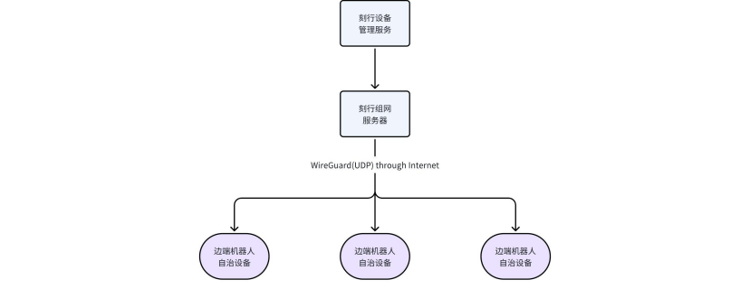
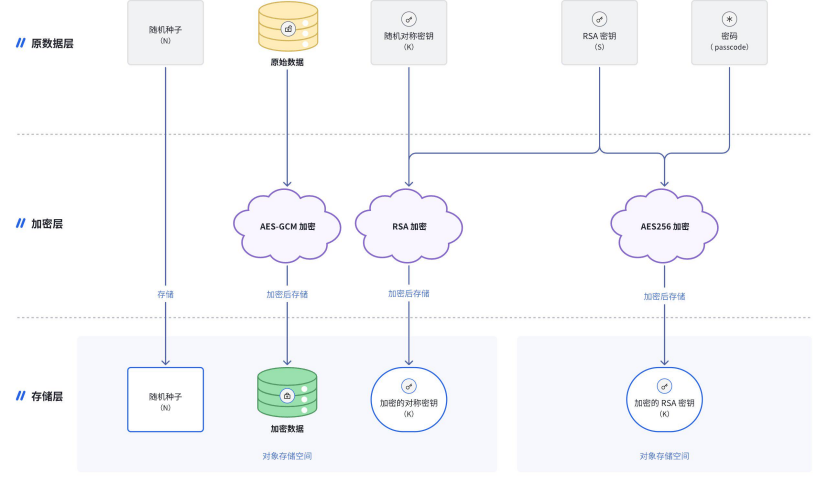

刻行时空数据安全方案
刻行时空为采用以下完整数据保护方案来确保数据安全
生产环境
概览
刻行时空生产环境只有在正常运转必要的部分开放访问。保证了数据的安全性完全由阿里云的强大安全屏障保障。
具体实现
•
为用户准备的生产环境使用独立的阿里云账号，完全物理隔离。和刻行时空的研发及预发布账号及其他环境不互通。
•
该环境严格管控访问权限，目前只有 2
个限制权限的运维人员有权限部署到该环境做有限运维。
•
该环境登陆操作有阿里云的审计记录，运维人员的运维操作可以通过审计日志审查。
•
该环境启用防火墙，生产环境对外只有开发 80 和
443
端口。
￮
非加密通讯 80
端口将自动将客户重定向到加密端口，过程中不传递任何数据
￮
加密通讯端口 443
端口，是生产环境外唯一可以和生产环境内的数据通讯的方式。下文会阐述该端口如何通过身份认证权限管理来保证访问安全
通讯加密
概览
对于在上文提到的正常运转必要的开放部分，刻行时空的所有服务均采用了通讯加密，身份认证，访问限制，操作日志审计等多种保护手段。这保证了即使在极端情况下，个别用户的使用出了问题，通过服务访问的数据也不会产生大规模泄漏。
具体实现
•
如上所提。刻行时空所有服务均通过加密端口 443，采用国际通用 TLS1.2
标准加密。
•
均保证采用全球顶尖企业数字证书提供商 DigiCert 的二级签发
CA
证书。
•
发起通讯时客户端必须使用钉钉认证用户员工身份，如员工离职，登陆权限将会自动失效。
•
各种数据访问操作也可以通过日志审查。
•
用户在刻行时空存储的数据，皆可通过用户自行指定的管理员配置来管理员工的访问权限。
•
刻行时空员工因为不在用户钉钉群，无法登陆查看用户数据。
存储加密
概览
用户数据存储在刻行时空平台上做了端对端的加密，即使黑客从底层攻入如上所述保护的生产环境，绕过访问限制，直接取得对象存储介质上的数据，由于该数据采用了加密保护，离开服务在内存中受到保护的密钥，这些数据依然是一堆密文，无法使用
具体实现
刻行时空对所有存储数据做静态加密处理。即先加密，再上传。所有存入刻行时空平台的文件都会在本地完成加密后再上传到对象存储，这可以在对象存储本身被破坏时有效地防止数据泄露。
刻行时空静态数据加密采用了行业标准的 AES-GCM 和
RSA
加密算法，只需在创建文件系统时提供一个
RSA
私钥即可为文件系统启用数据加密功能，通过 JFS_RSA_PASSPHRASE 环境变量提供私钥密码。在使用上，挂载点对应用程序完全透明，即加密和解密过程对文件系统的访问不会产生影响。
刻行时空对上传的所有数据采用一件一密的加密保护方式，所以即使黑客通过其他手段获得单一数据文件的
AES
密钥，依然无法大规模取得数据。上述的环境变量通过在部署时自动一次性注入内存，保证了绝对安全。
刻行时空设备组网服务
概览
结合刻行时空团队在行业内的多年实践经验，我们针对自治系统复杂度高，运维难度大的问题，推出了刻行时空设备组网功能，并在网络基础上为用户提供了一系列能大幅提高工作效率的运维工具。

功能安全实践
安全私网
网络安全由 WireGuard
协议保证，客户端软件和刻行时空组网服务器连接和交互的安全流程如下：
1.
刻行时空组网客户端向组网服务器发送连接请求，并将其保存到待处理客户端列表中，以公钥作为标识符；
2.
管理员通过网页或 API
显示
接受客户端（如果之前未接受）；
3.
下一个客户端的连接请求将得到连接信息和服务器的公钥作为响应；
4.
客户端创建一个 TUN 设备并与组网服务器建立连接；
5.
如果在设置过程中启用了 SSH
访问，客户端将会把服务器的公钥添加到 ~/.ssh/authorized_keys 中；
6.
在连接成功建立后，客户端将定期通过安全私有网络向服务器发送心跳。如果检测到断开连接，则客户端从步骤
1 开始，重新启动本过程。
安全 Web 控制台
管理员用户可以为启用 SSH 访问权限的任何客户端创建一个安全的
Web
控制台。其工作原理如下：
1.
管理员请求对客户端的 Web 控制台访问权限
2.
组网服务端生成一个 ttyd 进程，该进程使用服务器的私钥运行
SSH
命令以连接到客户端
3.
组网服务器创建一个临时反向代理，生成一个保密的临时 URL 指向
ttyd
的
websocket
节点
4.
管理员通过组网服务器访问 Web 控制台，实现类似
SSH
的命令行交互
由于 ttyd 支持
ZMODEM
文件传输协议，在使用加密
Web
控制台的同时，用户可以使用如
https://trzsz.github.io
的工具来进行下载
/
上传文件，
TRZSZ
会和刻行时空的组网服务一起预安装。 当前的
Web
控制台依赖于
SSH
访问权限，在有更高级别的安全性考虑的情况下，刻行时空也支持在客户端内部运行
ttyd
的嵌入式
rust
版本。
附录：
加密原理
采用对称加密与非对称加密相结合的静态加密方案，需要用户预先为文件系统创建一个全局 RSA
私钥 M
。在对象存储中保存的每个对象都将有自己的随机对称密钥 S
。数据用对称密钥 S 进行 AES-GCM 加密，S 用全局 RSA 私钥 M 进行加密，RSA 私钥使用用户指定的口令进行加密。
符号说明：
•
M 代表主密钥：RSA私钥
•
S 代表客户端为每个文件对象生成的 256 位对称密钥
•
N 代表客户端为每个文件对象生成的随机种子
•
K 代表 M 加密 S 得到的密文

数据加密过程
•
在写入对象存储之前，数据块会使用 LZ4 或
ZStandard
进行压缩。
•
为每个数据块生成一个随机的 256 位对称密钥 S 和一个随机种子 N
。
•
基于 AES-GCM 使用 S 和 N 对每个数据块进行加密得到 encrypted_data
。
•
为了避免对称密钥 S 在网络上明文传输，使用 RSA 私钥 M 对对称密钥 S 进行加密得到密文 K 。
•
将加密后的数据 encrypted_data
、密文 K 和随机种子 N 组合成对象，然后写入对象存储。
数据解密过程
•
读取整个加密对象（它可能比 4MB 大一点）。
•
解析对象数据得到密文 K
、随机种子 N 和被加密的数据 encrypted_data
。
•
用 RSA 私钥解密 K
，得到对称密钥 S
。
•
基于 AES-GCM 使用 S 和 N 解密数据 encrypted_data 得到数据块明文。
•
对数据块解压缩。